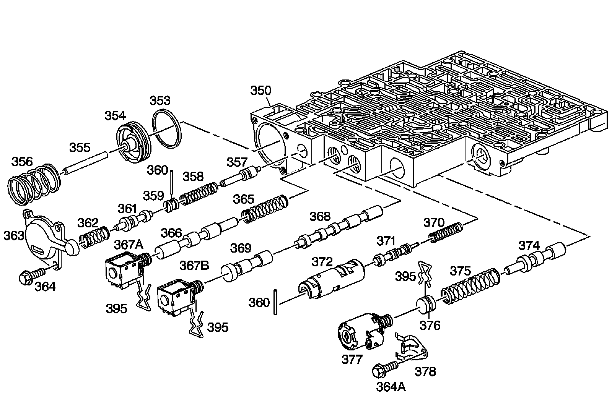
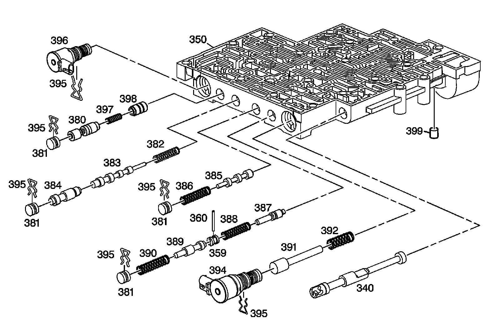

Control Valve Body Assembly
Disassembled Views
Control Valve Body Assembly:

350 - Control Valve Body Assembly
353 - Forward Accumulator Oil Seal
354 - Forward Accumulator Piston
355 - Forward Accumulator Pin
356 - Forward Accumulator Spring
357 - Forward Abuse Valve
358 - Forward Abuse Valve Spring
359 - Bore Plug
360 - Coiled Spring Pin
360 - Coiled Spring Pin
361 - Low Overrun Valve
362 - Low Overrun Valve Spring
363 - Forward Accumulator Cover
364 - Forward Accumulator Cover Bolt
364a - Pressure Control Solenoid Retainer Bolt
365 - 1-2 Shift Valve Spring - Model Dependent
366 - 1-2 Shift Valve - Model Dependent
367a - 1-2 Shift Solenoid Valve
367b - 2-3 Shift Solenoid Valve
368 - 2-3 Shift Valve
369 - 2-3 Shuttle Valve
370 - 1-2 Accumulator Valve Spring
371 - 1-2 Accumulator Valve
372 - 1-2 Accumulator Valve Sleeve
374 - Actuator Feed Limit Valve
375 - Actuator Feed Limit Valve Spring
376 - Bore Plug
377 - Pressure Control Solenoid Valve
378 - Pressure Control Solenoid Retainer
395 - Bore Plug and Solenoid Retainer
395 - Bore Plug and Solenoid Retainer
395 - Bore Plug and Solenoid Retainer
Control Valve Body Assembly:

340 - Manual Valve
350 - Control Valve Body Assembly
359 - Bore Plug
360 - Coiled Spring Pin
380 - Regulator Apply Valve
381 - Bore Plug
381 - Bore Plug
381 - Bore Plug
381 - Bore Plug
382 - 4-3 Sequence Valve Spring
383 - 4-3 Sequence Valve
384 - 3-4 Relay Valve
385 - 3-4 Shift Valve
386 - 3-4 Shift Valve Spring
387 - Reverse Abuse Valve
388 - Reverse Abuse Valve Spring
389 - 3-2 Downshift Valve
390 - 3-2 Downshift Valve Spring
391 - 3-2 Control Valve
392 - 3-2 Control Valve Spring
394 - 3-2 Control Solenoid Valve
395 - Bore Plug and Solenoid Retainer
395 - Bore Plug and Solenoid Retainer
395 - Bore Plug and Solenoid Retainer
395 - Bore Plug and Solenoid Retainer
395 - Bore Plug and Solenoid Retainer
395 - Bore Plug and Solenoid Retainer
396 - TCC PWM Solenoid Valve
397 - Regulator Apply Spring
398 - Isolator Valve
399 - Pump Ball Check Valve - M33 Only